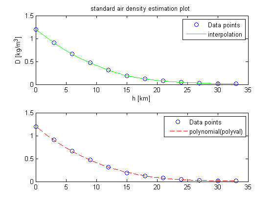
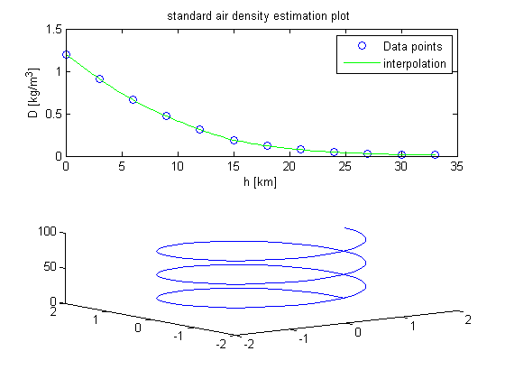
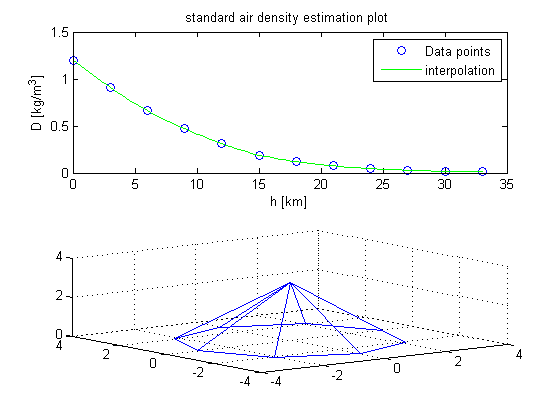
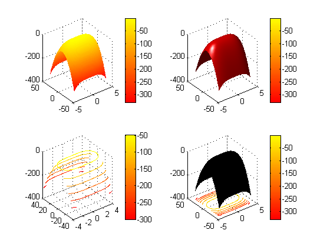
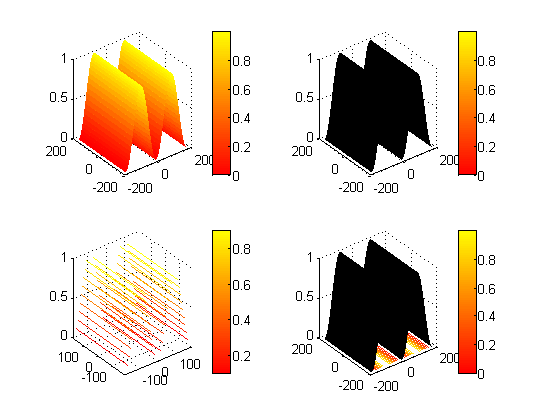
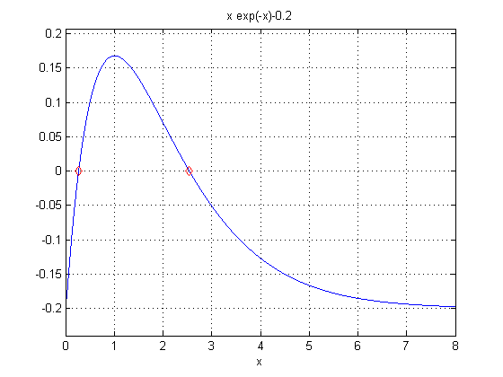
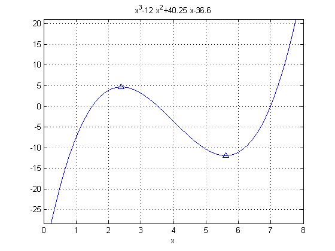
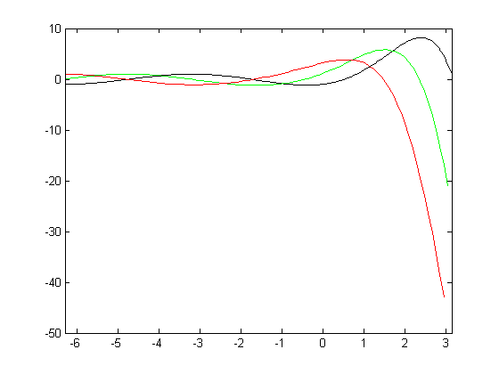

Contents
Ex_5
clc;clear all;format short;format compact;close all;
ex5_1
clc;clear all;
h = 0:3:33 ;
D = [1.2,0.91,0.66,0.47,0.31,0.19,0.12,0.075,0.046,0.029,0.018,0.011] ;
n = 3 ;
p = polyfit(h,D, n);
hi = linspace(0,33);
yi = interp1(h,D,hi,'spline');
y_p = polyval(p,hi);
subplot(2,1,1);
plot(h,D,'bo',hi,yi,'g-');
legend('Data points','interpolation');
xlabel('h [km]');
ylabel('D [kg/m^3]');
title('standard air density estimation plot ');
subplot(2,1,2);
plot(h,D,'bo', hi,y_p,'r--');
legend('Data points','polynomial(polyval)');

ex5_2
clc;clear all;
R = 1.5;
h = 3 ;
n = 3 ;
t = linspace(0,300) ;
x = R*cos(2*pi*n*t/h) ;
y = R*sin(2*pi*n*t/h) ;
z = t/h ;
plot3(x,y,z);

ex5_3
clc;clear all;
pyramid( 8, 3) ;

ex5_4
clc;clear all;close all;
x = linspace(-4,4);
y = linspace(-40,40);
[X, Y] = meshgrid(x,y);
z = -0.25*X.^4 + -1/6*Y.^2 ;
grid on;
colormap Autumn
subplot(2,2,1);
mesh(X,Y,z);
colorbar('location','EastOutside');
subplot(2,2,2);
surf(X,Y,z,'FaceColor','red','EdgeColor','none');
camlight left; lighting phong;
colorbar('location','EastOutside');
subplot(2,2,3);
contour3(X,Y,z);
colorbar('location','EastOutside');
subplot(2,2,4);
surfc(X,Y,z);
colorbar('location','EastOutside');

b)
close all;clc;clear all;
x = linspace(-180,180);
y = x ;
[X, Y] = meshgrid(x,y);
z = sind(X).^2;
grid on;
colormap Autumn
subplot(2,2,1);
mesh(X,Y,z);
colorbar('location','EastOutside');
subplot(2,2,2);
surf(X,Y,z);
colorbar('location','EastOutside');
subplot(2,2,3);
contour3(X,Y,z);
colorbar('location','EastOutside');
subplot(2,2,4);
surfc(X,Y,z);
colorbar('location','EastOutside');

ex5_5
clc;clear all;close all;
f = 'x*exp(-x)-0.2' ;
ezplot(f,[0,8]) ;
vec = [0,3] ;
k = 1 ;
for(i=vec)
r(k)= fzero(f,i);
k = k+1;
end
hold on;
plot(r,zeros(1,length(r)),'rd')
grid on;

ex5_6
clc;clear all;close all;
f = 'x^3-12*x^2+40.25*x-36.6' ;
ezplot(f,[0,8])
grid on;
vec = [2,6]
k = 1 ;
hold on;
for (i=vec)
[xmin(k) ymin(k)] = fminsearch(f,i);
[xmax(k) ymax(k)] = fminsearch(['-(',f,')'],i);
k = k+1 ;
end
plot(xmin,ymin,'b^');
plot(xmax ,-1*ymax,'b^');
vec =
2 6
Exiting: Maximum number of function evaluations has been exceeded
- increase MaxFunEvals option.
Current function value: -2037035976334495000000000000000000000000000000000000000000000000000000000000000000000000.000000
Exiting: Maximum number of function evaluations has been exceeded
- increase MaxFunEvals option.
Current function value: -54999971361032855000000000000000000000000000000000000000000000000000000000000000000000000.000000

ex5_7
clc;clear all;close all;
x = linspace(0,8);
y = x.*exp(-x.^0.8)+0.2' ;
s1 = trapz(x,y)
f = 'x.*exp(-x.^0.8)+0.2';
s2 = quad(f,0,8)
s3 = quadl(f,0,8)
s1 =
3.1599
s2 =
3.1604
s3 =
3.1604
ex5_8
clc;clear all;close all;
figure(1);
y = 'exp(x).*sin(x)-cos(x)' ;
fplot(y,[-2*pi,pi],'k-');
hold on;
x = linspace(-2*pi,pi,100) ;
y = exp(x).*sin(x)-cos(x) ;
dx1 = diff(x);
dy1 = diff(y);
y1 = dy1./dx1 ;
xnew1 = x(1:99);
plot(xnew1, y1, '-g');
dx2 = diff(xnew1);
dy2 = diff(y1);
y2 = dy2./dx2 ;
xnew2 = x(1:98) ;
plot(xnew2, y2, 'r-')

ex5_9,10
clc;clear all;close all;
x = linspace(-pi,pi,10000);
y = exp(x./2).*sin(x) - x./2 ;
s1 = trapz(x,y)
f = 'exp(x./2).*sin(x) - x./2';
s2 = quad(f,-pi,pi)
tic
s3 = quadl(f,-pi,pi)
toc
disp('------------------');
res1 = integral_1(y,x)
res2 = integral_2(y,x)
s1 =
3.6821
s2 =
3.6821
s3 =
3.6821
Elapsed time is 0.032510 seconds.
------------------
Elapsed time is 0.000410 seconds.
res1 =
3.6821
Elapsed time is 0.000148 seconds.
res2 =
3.6821